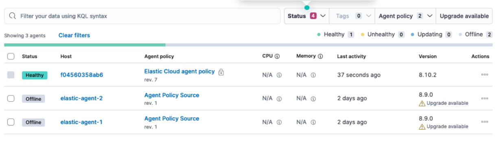
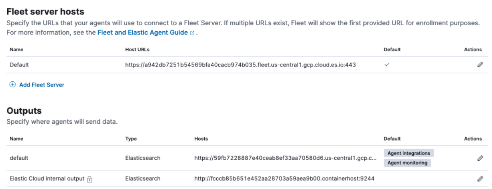
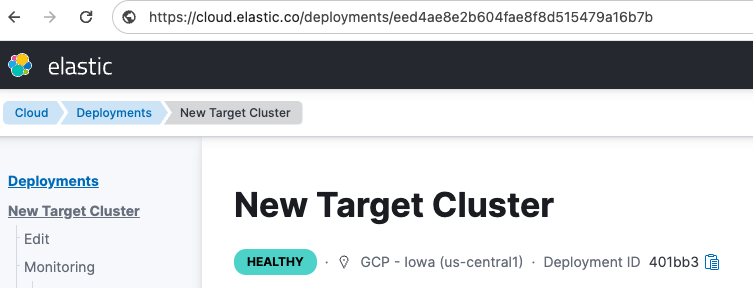
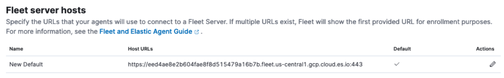
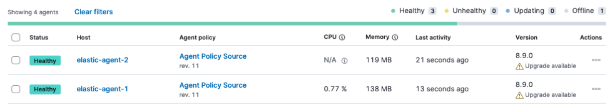

Migrate Fleet-managed Elastic Agents from one cluster to anotheredit
There are situations where you may need to move your installed Elastic Agents from being managed in one cluster to being managed in another cluster.
For a seamless migration, we advise that you create an identical agent policy in the new cluster that is configured in the same manner as the original cluster. There are a few methods to do this.
This guide takes you through the steps to migrate your Elastic Agents by snapshotting a source cluster and restoring it on a target cluster. These instructions assume that you have an Elastic Cloud deployment, but they can be applied to on-premise clusters as well.
Take a snapshot of the source clusteredit
Refer to the full Snapshot and restore documentation for full details. In short, to create a new snapshot in an Elastic Cloud deployment:
- In Kibana, open the main menu, then click Manage this deployment.
- In the deployment menu, select Snapshots.
-
Click Take snapshot now.

Create a new target cluster from the snapshotedit
You can create a new cluster based on the snapshot taken in the previous step, and then migrate your Elastic Agents and Fleet to the new cluster. For best results, it’s recommended that the new target cluster be at the same version as the cluster that the agents are migrating from.
- Open the Elastic Cloud console and select Create deployment.
- Select Restore snapshot data.
- In the Restore from field, select your source deployment.
- Choose your deployment settings, and, optimally, choose the same Elastic Stack version as the source cluster.
-
Click Create deployment.

Update settings in the target clusteredit
when the target cluster is available you’ll need to adjust a few settings. Take some time to examine the Fleet setup in the new cluster.
- Open the Kibana menu and select Fleet.
-
On the Agents tab, your agents should visible, however they’ll appear as
Offline. This is because these agents have not yet enrolled in the new, target cluster, and are still enrolled in the original, source cluster. - Open the Fleet Settings tab.
-
Examine the configurations captured there for Fleet. Note that these settings are scopied from the snapshot of the source cluster and may not have a meaning in the target cluster, so they need to be modified accordingly.
In the following example, both the Fleet Server hosts and the Outputs settings are copied over from the source cluster:
The next steps explain how to obtain the relevant Fleet Server host and Elasticsearch output details applicable to the new target cluster in Elastic Cloud.
Modify the Elasticsearch outputedit
-
In the new target cluster on Elastic Cloud, in the Outputs section, on the Fleet Settings tab, you will find an internal output named
Elastic Cloud internal output. The host address is in the form:https://<cluster-id-target>.containerhost:9244Record this
<cluster-id-target>from the target cluster. In the example shown, the ID isfcccb85b651e452aa28703a59aea9b00. -
Also in the Outputs section, notice that the default Elasticsearch output (that was copied over from the source cluster) is also in the form:
https://<cluster-id-source>.<cloud endpoint address>:443.Modify the Elasticsearch output so that the cluster ID is the same as that for
Elastic Cloud internal output. In this example we also rename the output toNew Elasticsearch.
In this example, the
New Elasticsearchoutput and theElastic Cloud internal outputnow have the same cluster ID, namelyfcccb85b651e452aa28703a59aea9b00.
You have now created an Elasticsearch output that agents can use to write data to the new, target cluster. For on-premise environments not using Elastic Cloud, you should similarly be able to use the host address of the new cluster.
Modify the Fleet Server hostedit
Like the Elasticsearch host, the Fleet Server host has also changed with the new target cluster. Note that if you’re deploying Fleet Server on premise, the host has probably not changed address and this setting does not need to be modified. We still recommend that you ensure the agents are able to reach the the on-premise Fleet Server host (which they should be able to as they were able to connect to it prior to the migration).
The Elastic Cloud Fleet Server host has a similar format to the Elasticsearch output:
https://<deployment-id>.fleet.<domain>.io
To configure the correct Elastic Cloud Fleet Server host you will need to find the target cluster’s full deployment-id, and use it to replace the original deployment-id that was copied over from the source cluster.
The easiest way to find the deployment-id is from the deployment URL:
- From the Kibana menu select Manage this deployment.
-
Copy the deployment ID from the URL in your browser’s address bar.
In this example, the new deployment ID is
eed4ae8e2b604fae8f8d515479a16b7b.Using that value for
deployment-id, the new Fleet Server host URL is:https://eed4ae8e2b604fae8f8d515479a16b7b.fleet.us-central1.gcp.cloud.es.io:443 -
In the target cluster, under Fleet server hosts, replace the original host URL with the new value.

Reset the Elastic Cloud policyedit
On your target cluster, certain settings from the original Elastic Cloud Elastic Agent policiy may still be retained, and need to be updated to reference the new cluster. For example, in the APM policy installed to the Elastic Cloud Elastic Agent policy, the original and outdated APM URL is preserved. This can be fixed by running the reset_preconfigured_agent_policies API request. Note that when you reset the policy, all APM Integration settings are reset, including the secret key or any tail-based sampling.
To reset the Elastic Cloud Elastic Agent policy:
-
Choose one of the API requests below and submit it through a terminal window.
-
If you’re using Kibana version 8.11 or higher, run:
curl --request POST \ --url https://{KIBANA_HOST:PORT}/internal/fleet/reset_preconfigured_agent_policies/policy-elastic-agent-on-cloud \ -u username:password \ --header 'Content-Type: application/json' \ --header 'kbn-xsrf: as' \ --header 'elastic-api-version: 1' -
If you’re using a Kibana version below 8.11, run:
curl --request POST \ --url https://{KIBANA_HOST:PORT}/internal/fleet/reset_preconfigured_agent_policies/policy-elastic-agent-on-cloud \ -u username:password \ --header 'Content-Type: application/json' \ --header 'kbn-xsrf: as'After running the command, your Elastic Cloud agent policy settings should all be updated appropriately.
-
After running the command, a warning message may appear in Fleet indicating that Fleet Server is not healthy. As well, the Elastic Agent associated with the Elastic Cloud agent policy may disappear from the list of agents. To remedy this, you can restart Integrations Server:
- From the Kibana menu, select Manage this deployment.
- In the deployment menu, select Integrations Server.
- On the Integrations Server page, select Force Restart.
After the restart, Integrations Server will enroll a new Elastic Agent for the Elastic Cloud agent policy and Fleet Server should return to a healthy state.
Confirm your policy settingsedit
Now that the Fleet settings are correctly set up, it pays to ensure that the Elastic Agent policy is also correctly pointing to the correct entities.
- In the target cluster, go to Fleet → Agent policies.
- Select a policy to verify.
- Open the Settings tab.
-
Ensure that Fleet Server, Output for integrations, and Output for agent monitoring are all set to the newly created entities.

If you modified the Fleet Server and the output in place these would have been updated accordingly. However if new entities are created, then ensure that the correct ones are referenced here.
Agent policies in the new target clusteredit
By creating the new target cluster from a snapshot, all of your policies should have been created along with all of the agents. These agents will be offline due to the fact that the actual agents are not checking in with the new, target cluster (yet) and are still communicating with the source cluster.
The agents can now be re-enrolled into these policies and migrated over to the new, target cluster.
Migrate Elastic Agents to the new target clusteredit
In order to ensure that all required API keys are correctly created, the agents in your current cluster need to be re-enrolled into the new, target cluster.
This is best performed one policy at a time. For a given policy, you need to capture the enrollment token and the URL for the agent to connect to. You can find these by running the in-product steps to add a new agent.
- On the target cluster, open Fleet and select Add agent.
- Select your newly created policy.
- In the section Install Elastic Agent on your host, find the sample install command. This contains the details you’ll need to enroll the agents, namely the enrollment token and the Fleet Server URL.
-
Copy the portion of the install command containing these values. That is,
–url=<path> –enrollment-token=<token for the new policy>.
-
On the host machines where the current agents are installed, enroll the agents again using this copied URL and the enrollment token:
sudo elastic-agent enroll --url=<fleet server url> --enrollment-token=<token for the new policy>
The command output should be like the following:

-
The agent on each host will now check into the new Fleet Server and appear in the new target cluster. In the source cluster, the agents will go offline as they won’t be sending any check-ins.
 - Repeat this procedure for each Elastic Agent policy.
If all has gone well, you’ve successfully migrated your Fleet-managed Elastic Agents to a new cluster.